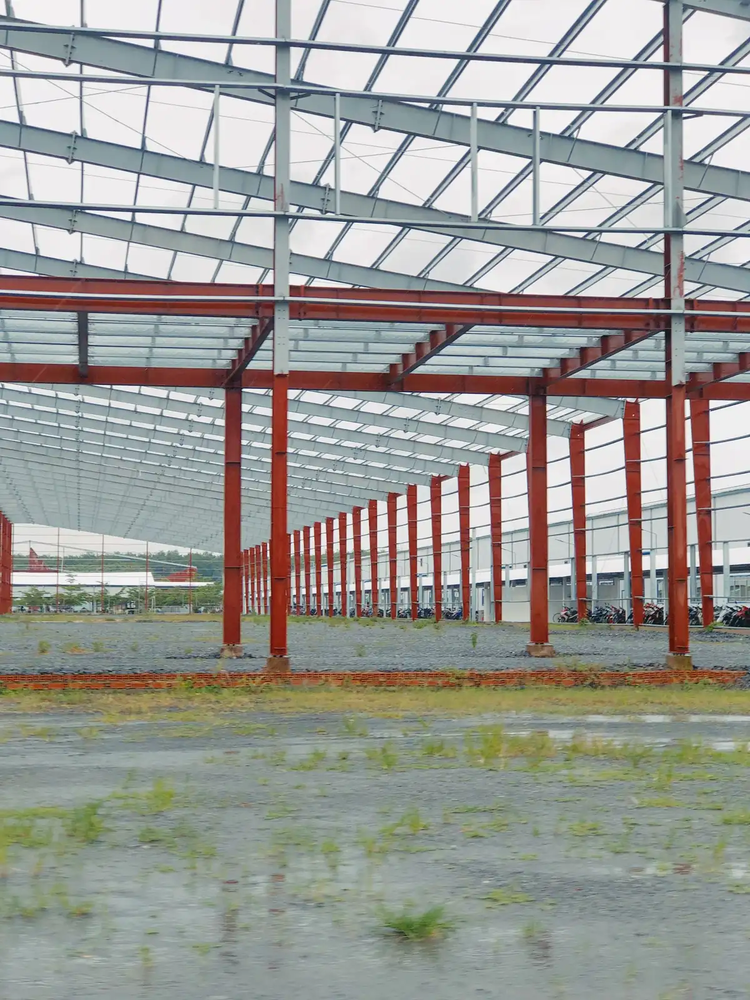
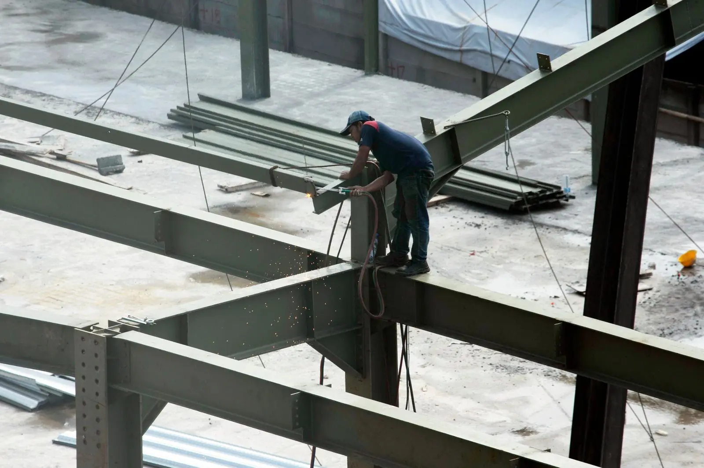

Início / Engenharia e segurança
ES.00 Engenharia e segurança
Engenharia integrada, obra sob controle
Projeto, planejamento, qualidade e segurança do trabalho com o mesmo rigor. O que é medido entra no relatório; o que entra no relatório é cobrado.
01 Engenharia integrada
Todas as disciplinas no mesmo modelo
Arquitetura, estrutura, fundações, instalações e incêndio são desenvolvidos juntos e compatibilizados em BIM antes de ir para a obra.
- Compatibilização antes da obra: interferências entre estrutura e instalações resolvidas no modelo, não no canteiro.
- Quantitativos do modelo: o orçamento sai das quantidades do projeto, item por item.
- Projeto as built: o modelo é atualizado na obra e entregue no data book.

02 Planejamento e controle
O relatório que o cliente recebe toda sexta
Exemplo de painel de avanço físico por disciplina. Valores ilustrativos.
Dados ilustrativosRS-27 Relatório semanal · obra exemplo
Avanço físico total: 61% · Previsto: 58% · Desvio: +3 p.p.
- Cronograma em linha de balanço. Frentes de serviço visíveis no tempo e no espaço.
- Curva S de desembolso. Previsto x realizado, para o financeiro do cliente.
- Diário de obra digital. Clima, efetivo, equipamentos e ocorrências do dia.
- Medição mensal. Paga o que foi executado, conferido em campo.

03 Qualidade
Inspeção por etapa, registro de tudo
- Plano de inspeção e ensaios aprovado antes do início
- Fichas de verificação por serviço, assinadas pelo engenheiro
- Controle tecnológico de concreto, solo e soldas
- Tratamento de não conformidade com causa e prazo
- Rastreabilidade de materiais estruturais
04 Segurança do trabalho
Segurança medida como prazo e custo
Técnico de segurança em tempo integral em toda obra e indicadores no relatório semanal.
Falar com a segurança do trabalhoPGR da obra
Programa de Gerenciamento de Riscos elaborado antes da mobilização e revisado a cada fase.
DDS todo dia
Diálogo diário de segurança antes do início do turno, com registro de presença.
Permissão de trabalho
Trabalho em altura, içamento e solda só com análise de risco e permissão assinada.
Proteção coletiva primeiro
Linhas de vida, guarda-corpos e redes antes do equipamento individual.
Treinamento registrado
Integração, NR-35 e operadores de máquina com certificado e validade controlada.
Indicadores no relatório
Horas trabalhadas, quase acidentes, inspeções e taxa de frequência toda semana.
05 Normas e referências
Qualidade, conformidade e segurança
Normas regulamentadoras são lei e valem para qualquer obra. Certificações são voluntárias e só valem com certificado emitido por organismo acreditado.
Sistema de gestão da qualidade: processos padronizados, controle de documentos, inspeções e tratamento de não conformidades.
Referência demonstrativa — comprovação a inserirPrograma Brasileiro da Qualidade e Produtividade do Habitat (SiAC): requisitos de qualidade para construtoras, por níveis.
Referência demonstrativa — comprovação a inserirSistema de gestão de saúde e segurança ocupacional: identificação de perigos, controle de riscos e melhoria contínua.
Referência demonstrativa — comprovação a inserirNorma regulamentadora do Ministério do Trabalho sobre segurança e saúde na indústria da construção: canteiro, PGR, proteções coletivas, máquinas e treinamentos. É obrigatória para toda obra.
Norma obrigatória · não é certificaçãoNorma regulamentadora sobre trabalho em altura (acima de 2 m): análise de risco, permissão de trabalho, sistemas de ancoragem e treinamento a cada dois anos.
Norma obrigatória · não é certificaçãoNormas técnicas da ABNT usadas no cálculo: NBR 8800 para estruturas de aço e NBR 9062 para estruturas de concreto pré-moldado. Seguidas em todo projeto estrutural.
Norma técnica de projeto · não é certificaçãoComo fica no site real: cada certificação aparece com o número do certificado, o organismo certificador e a validade, e o link para conferência. Sem comprovação, ela não é exibida.
Precisa do pacote de documentos para homologar fornecedor?
Enviamos PGR, procedimentos e documentação da empresa para o seu setor de suprimentos.